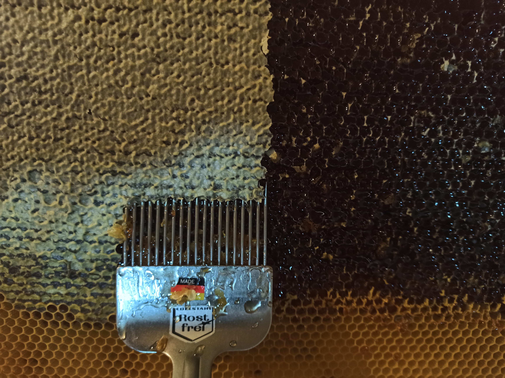

Mums ir ļoti garšīgs medus!!! Apsolam!
Liriskā varone stāsta, ka cilvēka dzīve ir pārāk īsa, lai paspētu visu, ko cilvēks varētu vēlēties,
pārāk īsa, lai izbaudītu laimes mirkļus, tāpēc atliek tikai tiekties pēc šiem ideāliem un neaizsniedzamajiem
mērķiem un sapņiem: “Augstībā tur nesasniegtā/ Ideāli paceļas –/ Pīšļu radījumiem atliek/ Tik pēc viņiem cenšanās.”

Tālāk liriskā varone stāsta, cik lielas vērtības ir šie īsie laimes un spēcīgo jūtu acumirkļi,
kā vietā ātri atgriežas gurdenība un dzīves ikdieņišķums: “Tā starp mazām bēdām priekiem,/ Ikdienības kārtībā/
Sadrūp dzīve pamazītēm/ It kā sausa garoza.” Tomēr liriskā varone negrib dzīvot tik vienkārši, viņu nomāc ilgas pēc
pilnības, kad dzīve ir kaisles pilna: “Ne vidus ceļu laipot,/ Es gribu pilnību!/ Šo drusku labu-ļaunu/ Līdz nāvei
ienīstu.” Taču viņa saprot, ka nav saprātīgi šādi dzīvot, jo cilvēkam ir jābūt savam pienākumam, pastāvībai un dzīves
mērķim, nevar dzīvi dzīvot kā pa mākoņiem. Šī apziņa, ka nevar dzīvot pēc ideāla, sagrauj. Viņa ļaujas dzīves straumei,
juzdamies nožēlojami, tomēr tad apjēdz, ka grib dzīvot, cik ilgi var, jo nav taču jāizvēlas starp visu vai neko. Liriskā
varone tagad ir ar mieru dzīvot kaut vai bez visa spožuma, bez ideāla un spēcīgajām jūtām: “Atstājat tik gribu:/
Dzīvot, dzīvot vēl!” Lai arī, cik grūti būtu šādi sadzīvot, liriskā varone ir cieši apņēmusies pārvarēt savas jūtas.
Viņa atkal nonāk dzīves skaudruma varā, kur tikai liktenis nosaka dzīves iznākumu. Taču tad liriskā varone pēkšņi
sāk sevi kritizēt, viņu grauž sirdsapziņa, pat to, ka viņai nav bijis spēka pretoties šādai vienkāršai dzīvei,
jo viņa zina, ka negrib dzīvot tik vienmuļi. Viņa saņem grožus savās rokās: “Ak, dodat man tikai ilgas vēl,/ Šīs smagās
miesas kas šķeltu/ Un tālu pār ikdienas dzīvi pār/ Pret zildzidrām debesīm celtu.” Viņa ir sapratusi savu nostāju un nosoda
tos, kas neuzdrošinās dzīvē riskēt, kā viņa to dara, to baudīt, tai pretoties. Viņa nosoda tos, kas ērti iekārtojas
dzīvē un neuzņemas dzīves grūtības. Cilvēkam jājūt, dvēseli vajag barot ar sajūtām, kaisli: “Ko dvēselei der – cik neprātīgi!
–/ Cēls karaļmētels, svēts un dārgs./ Jūs lēti, silti, omulīgi/ Sedz ikdienības rīta svārks.”